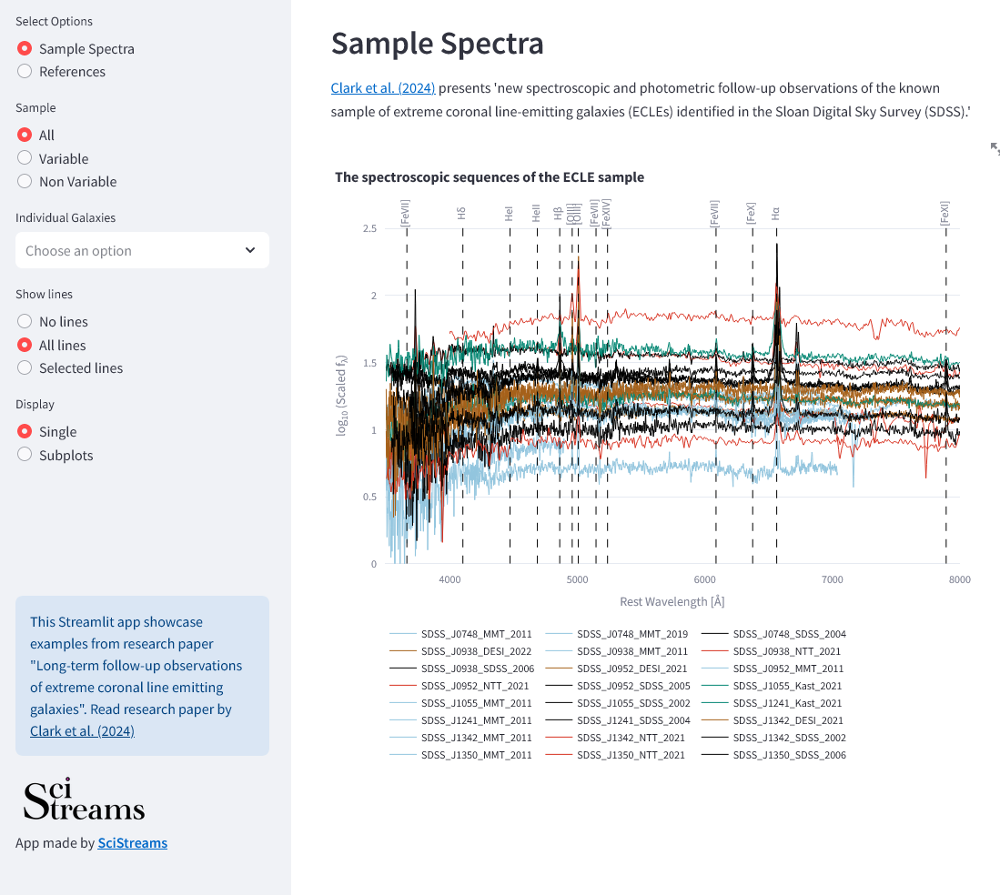
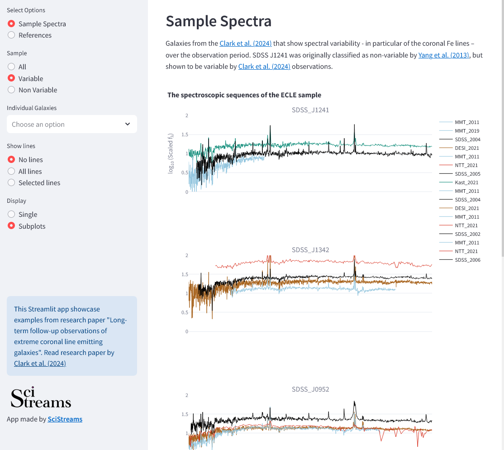
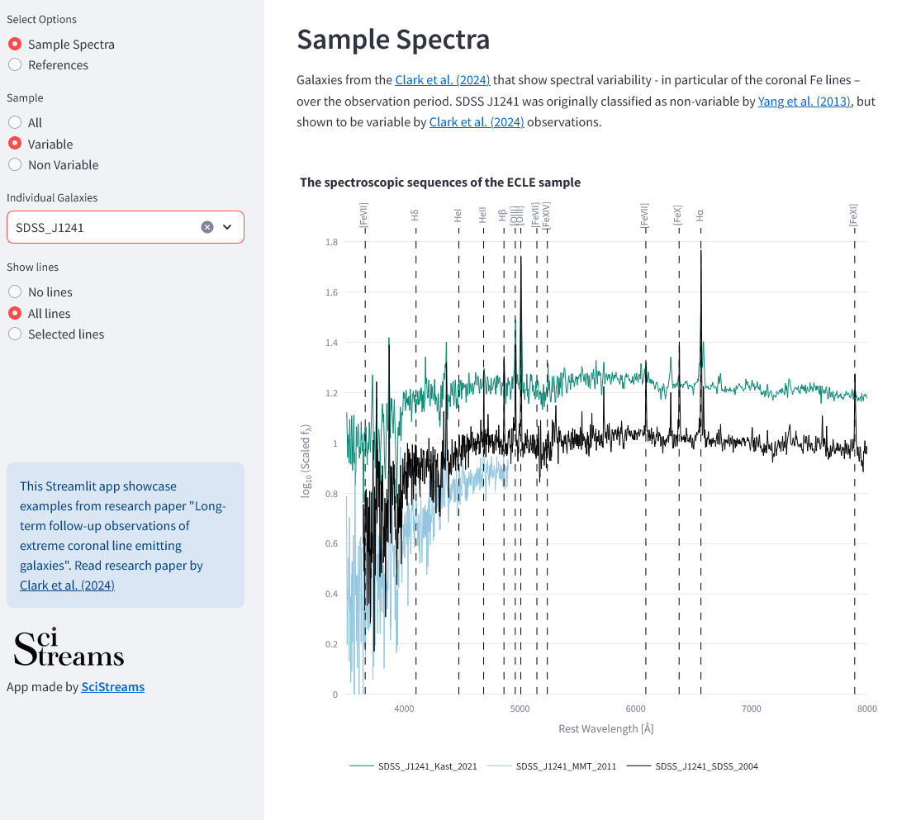
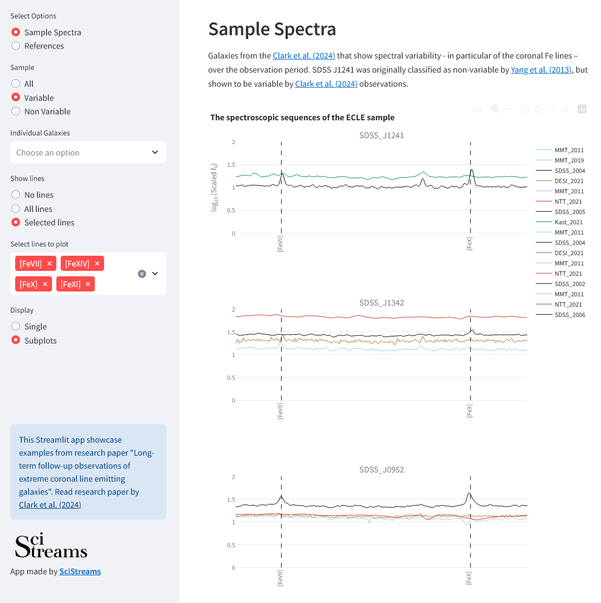

Long-term follow-up observations of extreme coronal line emitting galaxies
Paper by Clark et al. 2024
This Streamlit app showcase sample of galaxies from Clark et al. 2024. They presented new spectroscopic and photometric follow-up observations of the known sample of extreme coronal line-emitting galaxies (ECLEs) identified in the Sloan Digital Sky Survey (SDSS).
ECLE Galaxies App
Below we present ECLE Galaxies App, where you can interact with spectra of galaxies that were presented in Clark et al. 2024 research.
With this app, you can interactively explore full sample of galaxies, select sub-sabples based on variability, and you can chose individual galaxies.
You san further select sub-samples of galaxies based on their properties: whether they are determined to be variable or non variable. Furthermore, it is possible to show each galaxy on a suplot.
One can turn on all spectral lines or just select which spectral lines they want to mark on plots. For example, if wanting to have a closer look at the coronal Fe spectral lines.
In case of "Subplots", if you zoom into one plot, all plots from the page will be zoomed into the same region.
